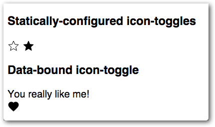

このcodelabでは、Polymer3を使ったカスタムエレメントの作り方について学べます。ボタンをトグルする簡単なPolymerエレメントを作ります。完成イメージは以下のような感じになります。

これは以下のような簡単なマークアップで利用可能になります。
<icon-toggle></icon-toggle>このcodelabでは、Polymerを使って作業するための重要なコンセプトについても紹介していきます。
もし全てのコンセプトについて理解できなくても心配しないでください。それらの内容はPolymerの公式ドキュメントにより詳しく書かれています。
チュートリアルを始める前に、以下のソフトウェアがあることを確認してください:
- xterm や bash といったコマンドラインツール
- テキストエディタ (コードハイライトできるものだと完璧です。例えば Visual Studio Code、 Atom や Brackets のようなものです)
- 最新版のChromeブラウザ
以下の項目について、基本的なスキルや知識が必要になります:
- コマンドラインの使い方
- HTML, CSS, JavaScriptの基礎
- 変数、関数、状態、ループといったプログラミングの基本的な理解
- オブジェクト、クラス、抽象化、カプセル化といったオブジェクト指向の基本的な理解
- Web開発についてもっと知ってるよ！という人がいるかもしれませんが、このチュートリアルは初心者向けです
Gitのインストール
Gitはバージョン管理ツールです
- Gitインストーラーをダウンロードして実行してください
- 次のコマンドを実行して Git のバージョンを確認してください:
git --version
インストールが成功していれば、Gitのバージョンが表示されるはずです。
もしGitのバージョン番号がgit version 2.18.0のように表示されない場合は、次のリンクを参照してみることをおススメします。公式ドキュメント - Gitのインストール.
Node と npm のインストール
NodeはJavaScriptの実行環境です。npmはNodeのパッケージ管理ツールです。これらはNodeをインストールすると両方ともインストールされます。
- Nodeインストーラーをダウンロードして実行してください(npmもインストールされるはずです)
- npmを最新版に更新してください:
npm install npm@latest -g - 次のコマンドを実行してnodeとnpmのインストールが成功したかを確認してください:
現時点で node -v は v8.10.0 でした
現時点で npm -v は 5.8.0 でした
バージョン番号が表示されなかったら 公式ドキュメントのインストールガイドを参照してください
チュートリアルをインストールする
次のコマンドでリポジトリをクローンしてください。
git clone https://github.com/Polymer-Japan/polymer3-first-element.git
依存するパッケージのインストール
ディレトリをクローン先に移動してから、npmコマンドで依存するパッケージをインストールします。
cd polymer3-first-elements npm install
インターネット回線が遅いと、とても時間がかかる場合があります....
インストールが終了すると、以下のようなディレクトリ構造になります。

作業する主なファイルはicon-toggle.jsです。このファイルにはカスタムエレメントの定義が入っています。
デモを実行する
デモの実行方法はとても簡単です。まだアプリは何も実装していませんが、以下のコマンドを実行してみましょう。
npm start
すると、Polymerの開発サーバーが動いて、デモがブラウザ(chrome)の新しいタブで開きます。アイコントグルは表示されず、テキストだけが表示されるはずです。どうってことないかもしれませんが、これで全てがうまく動いていることが確認できます。

次に、画面にアイコンを表示するための簡単なエレメントを作ってみましょう。
このステップでは、以下のようなことを学習できます。
- Polymerを使ったカスタムエレメントの作り方
- Shadow DOMの動き
icon-toggle.js を編集する
エディタでicon-toggle.jsファイルを開いてください。このファイルにはカスタムエレメントのスケルトンが入っています。
既存コードを見ながら進めましょう。
ES6 Module importsの書き方
import {html, PolymerElement} from '@polymer/polymer/polymer-element.js';
import '@polymer/iron-icons/iron-icons.js';
import '@polymer/iron-icon/iron-icon.js';
キーポイント:
- この
importはES6 Module importです。アプリケーションで利用するエレメントやモジュールをインポートします。 - この三行は、Polymerライブラリと、カスタムエレメントと呼ばれる
iron-iconsとiron-iconをインポートします。これらは、この後で登場します。
次はエレメント自体を定義していきます。
Shadow DOM テンプレートの書き方
class IconToggle extends PolymerElement {
static get template() {
return html`
<style>
/* local DOM styles go here */
:host {
display: inline-block;
}
</style>
<!-- local DOM goes here -->
<span>Not much here yet.</span>
`;
}
}
キーポイント:
- カスタムエレメントを定義するには、
PolymerElementを継承したクラスを作成します。 - エレメントのテンプレートを記述する場合は、エレメントのコンストラクタ上に
templateプロパティを定義します。例えばtemplateというstatic getterが使えます。エレメントが初めてインスタンス化されると template が呼び出されます（つまり2度目のインスタンス化では呼び出されません）。 - template の getter は HTMLTemplateElement のインスタンスを返却する必要があります。
htmlヘルパーを使うとJavaScriptのテンプレートリテラルから HTMLTemplateElement インスタンスを生成できます。(htmlヘルパーはpolymer-element.jsモジュールからインポートできます) template内の<style>エレメントを使うと、Shadow DOMにscopedな(カプセル化された)スタイルを定義できます。これはドキュメントの他の部分には影響を及ぼしません。:host擬似クラスは、定義するカスタムエレメントそのもの(この場合は<icon-toggle>エレメント自体)です。
エレメントの登録方法
window.customElements.define('icon-toggle', IconToggle);
キーポイント:
- カスタムエレメントを登録するには、
customElements.defineメソッドの第二引数にエレメントクラスを指定します。 - 第一引数には、カスタムエレメントの名前が必要で、ASCIIの小文字で始まって、ハイフン(-)を含めなければなりません。
Shadow DOM構造を作る
エレメントの基本構造にふれたところで、Shadow DOMテンプレートを編集してみましょう。
local DOM goes hereというコメントの後に書いてある<span>タグを見つけてください。
icon-toggle.js—修正前
<!-- local DOM goes here -->
<span>Not much here yet.</span>
`;<span>タグを、以下のように<iron-icon>に置き換えてみてください。
icon-toggle.js—修正後
<!-- local DOM goes here -->
<iron-icon icon="polymer">
</iron-icon>
`;キーポイント:
<iron-icon>エレメントはアイコンを表示するカスタムエレメントです。今は "polymer" という名前をハードコーディングしています。
Shadow DOMにスタイルを付ける
Shadow DOMで利用できる新しいCSSセレクターがいくつかあります。icon-toggle.jsファイルの:hostセレクターはすでに紹介しました。これは<icon-toggle> エレメントそのもののスタイルを指定します。
<iron-icon>エレメントのスタイルを指定するために、<style>タグ内のCSSを以下の内容に書き換えてください:
icon-toggle.js
<style>
/* local styles go here */
:host {
display: inline-block;
}
iron-icon {
fill: rgba(0,0,0,0);
stroke: currentcolor;
}
:host([pressed]) iron-icon {
fill: currentcolor;
}
</style>キーポイント:
<iron-icon>タグはSVGアイコンを使っています。fillやstrokeは、SVG固有のCSSプロパティです。アイコンの塗りつぶしと輪郭の色をそれぞれ設定します。:host()関数は、引数で指定されたセレクタが一致するホスト要素(エレメント)に適用されます。このときの[pressed]は標準のCSS属性セレクタで、icon-toggleエレメントにpressed属性が設定されている場合に、スタイルが適用されます。
これまでの修正で、カスタムエレメント定義は以下のようになっていると思います。
icon-toggle.js
import {html, PolymerElement} from '@polymer/polymer/polymer-element.js';
import '@polymer/iron-icons/iron-icons.js';
import '@polymer/iron-icon/iron-icon.js';
/**
* `icon-toggle`
* Get started creating custom elements with Polymer 3
*
* @customElement
* @polymer
* @demo demo/index.html
*/
class IconToggle extends PolymerElement {
static get template() {
return html`
<style>
/* local styles go here */
:host {
display: inline-block;
}
iron-icon {
fill: rgba(0,0,0,0);
stroke: currentcolor;
}
:host([pressed]) iron-icon {
fill: currentcolor;
}
</style>
<!-- local DOM goes here -->
<iron-icon icon="polymer">
</iron-icon>
`;
}
}
window.customElements.define('icon-toggle', IconToggle);デモページをリロードしてください。ハードコーディングしたアイコン表示のトグルボタンが表示されるはずです。

1つのトグルだけが押されたようなスタイルになっています。そのタグにはpressed属性が設定されているためです。しかし、トグルボタンをクリックしても、まだトグルは動きません。pressedプロパティを変更するコードがまだないためです。
今のところエレメントは、変化しません。このステップでは、アイコンをマークアップ上から指定するための属性の使い方と、JavaScriptからプロパティを使う方法について、基本的なAPIを紹介します。
まず、データバインディングから始めましょう。 <iron-icon>エレメントを探して、icon属性の値を"polymer"から"[[toggleIcon]]"に変更してみましょう。
icon-toggle.js
<!-- local DOM goes here -->
<iron-icon icon="[[toggleIcon]]">
</iron-icon>キーポイント:
toggleIconは、後でトグルボタンエレメントのプロパティとして定義します。デフォルト値はまだありません。- このように
icon="[[toggleIcon]]"と記述することでデータバインディングを利用できます。トグルボタンエレメントのtoggleIconプロパティの値を<iron-icon>のiconプロパティにリンクします。
以下の例のように、エレメントのマークアップで記述するか、JavaScriptを使用してtoggleIconプロパティの値を設定できます(このコードをプロジェクトに追加する必要はありません)。
例—マークアップを使ってアイコンを指定する
<icon-toggle toggle-icon="favorite"></icon-toggle>例—JavaScriptからアイコンを指定する
var myToggle = document.querySelector('icon-toggle');
myToggle.toggleIcon = "favorite";続いて、toggleIconプロパティの宣言を追加します。
次のようなstatic get properties関数をIconToggleクラスに追加してください:
icon-toggle.js
class IconToggle extends PolymerElement {
static get properties() {
return {
toggleIcon: String,
};
}
キーポイント:
- プロパティを宣言するには、
static get properties関数をエレメントクラスに追加します。この関数は、プロパティ宣言を含むオブジェクトを返す必要があります。 - これは単純なプロパティ宣言の例で、型(この場合は
String)だけを指定します。
propertiesオブジェクトは、さらにいくつかの機能をサポートしています。pressedプロパティを利用できるようにするため、以下のように変更します。
icon-toggle.js
static get properties() {
return {
toggleIcon: String,
pressed: {
type: Boolean,
value: false,
notify: true,
reflectToAttribute: true
}
};
}
キーポイント:
- 複雑なプロパティの場合は、複数のフィールドを持つオブジェクトを指定します。
valueにはデフォルト値を指定します。notifyをtrueに設定すると、値が変わったときにプロパティ変更イベントが生成されます。これにより、他のノードが変更を知ることができますreflectToAttributeをtrueに設定すると、プロパティ値が変更されたとき属性の値が追従します。これにより、icon-toggle[pressed]のような属性セレクタを使用して要素にスタイルを適用できます。
この修正でエレメントの pressed と toggleIcon プロパティが動くようになりました。
デモページをリロードすると、前のステップまでハードコーディングされていたアイコンが、星とハートのアイコンに変わって表示されているはずです。

星とハートがどこで指定されたのか興味があれば、demo/icon-toggle-demo.jsを見てください。以下のように記述されています。
<icon-toggle toggle-icon="star"></icon-toggle>
<icon-toggle toggle-icon="star" pressed></icon-toggle>もちろん、クリックできないボタンはボタンではありません。ボタンをトグルするには、イベントリスナーを追加します。ホストエレメント（この場合はicon-toggle）にイベントリスナーを追加するには、以下のようにGestureEventListenersミックスインを要素に追加します。
icon-toggle.js
import {html, PolymerElement} from '@polymer/polymer/polymer-element.js';
import {GestureEventListeners} from '@polymer/polymer/lib/mixins/gesture-event-listeners.js';
import * as Gestures from '@polymer/polymer/lib/utils/gestures.js';
import '@polymer/iron-icons/iron-icons.js';
import '@polymer/iron-icon/iron-icon.js';
/**
* `icon-toggle`
* Get started creating custom elements with Polymer 3
*
* @customElement
* @polymer
* @demo demo/index.html
*/
class IconToggle extends GestureEventListeners(PolymerElement) {
constructor() {
super();
Gestures.addListener(this, 'tap', this.toggle.bind(this));
}
toggle() {
this.pressed = !this.pressed;
}
static get properties() {
キーポイント:
GestureEventListenersを利用すると、ジェスチャーイベントを取得できるようになります。tapイベントは、ユーザがマウスまたは指でターゲットをクリックまたはタップすると、Polymerのgesture systemによって生成されます。gesturesモジュール（@polymer/polymer/lib/utils/gestures.js）のaddListener/removeListenerメソッドを使用します。addListener関数を使用して、ホストエレメントにリスナーを追加できます。
icon-toggle.jsファイルを保存し、デモをリロードします。ボタンを押すと、押した状態と押していない状態を切り替えることができるはずです。

これまで、ベーシックな機能のボタンを作りました。しかし、押された状態と押されていない状態の両方ともに、標準テキストカラーを使用しています。ちょっと派手にしたいと思ったら、どうしたら良いでしょう？
Shadow DOMは、ユーザーが意図せずにエレメントの内部にスタイルを適用するのを防ぎます（同時に外部からスタイルを指定できなくなります）。こうしたときのために、カスタムプロパティを使うと、エレメント内のスタイルをユーザーが設定できるように特定のプロパティセットを提供できます。
var関数を使って、エレメント内部にカスタムプロパティを適用します。
background-color: var(--my-custom-property, defaultValue);--my-custom-propertyはカスタムプロパティ名で、常に2つのダッシュ(--)で始まり、defaultValueはカスタムプロパティが設定されていない場合に使用される(オプションの)CSS値です。
エレメントの<style>タグを編集し、現在のfillとstrokeの値をカスタムプロパティに変更します。
icon-toggle.js
<style>
/* local styles go here */
:host {
display: inline-block;
}
iron-icon {
fill: var(--icon-toggle-color, rgba(0,0,0,0));
stroke: var(--icon-toggle-outline-color, currentcolor);
}
:host([pressed]) iron-icon {
fill: var(--icon-toggle-pressed-color, currentcolor);
}
</style>SVGのデフォルト値として、colorを設定するだけで<icon-toggle>のスタイルを変更することもできますが、他のオプションを使ってみます。 demo/icon-toggle-demo.jsを開き、以下のようにカスタムプロパティを設定します
icon-toggle-demo.js
<style>
:host {
font-family: sans-serif;
--icon-toggle-color: lightgrey;
--icon-toggle-outline-color: black;
--icon-toggle-pressed-color: red;
};
</style>デモページをリロードするとカラフルになっているはずです。

これでチュートリアルは終わりです。基本的なUIやAPIとカスタムスタイリングプロパティを持つ要素を作成しました。
もし作業に問題があったときは、完成版のコードを参照してください。